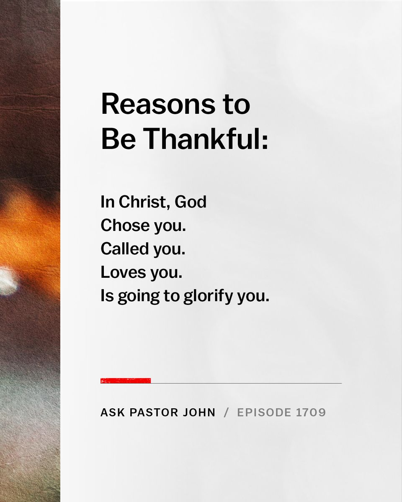
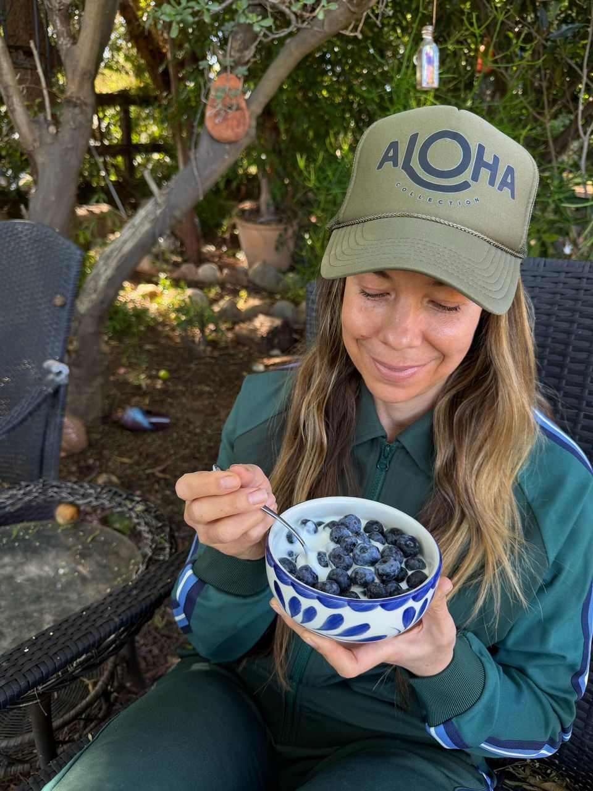

Simon Sarris @simonsarris · Nov 25
the bird that has never seen a nest still builds the nest
Simon Sarris @simonsarris · Nov 25
the bird that has never seen a nest still builds the nest
Pico Iyer @PicoIyer · Nov 26
Gratitude is the form of prayer that needs no answer and that can never be exhausted. Who knows but it may be the best way of honoring a life that is the one partner we always have to live with?
Paul Millerd @p_millerd · Nov 27
The greatest joy is giving. And then giving. And then giving and then never knowing if you’ve received anything back. And the remembering you used to live in a transactional world and no longer need to have that be the core of living
Eric Jorgenson 📚 ☀️ @EricJorgenson · Nov 26
To be tied for the newest book on this list with @morganhousel is pretty incredible.
Hope this book is still serving readers in 100 years!
Simon Sarris @simonsarris · Nov 26
Part of what makes this hard to convey and why I prefer writing to speaking, is that it's a medium distance thought. (Alexander conveys it beautifully here, because he is articulate and because he tells it not only as facts but in the format of a story). Most interviewers today don't have the patience to let the speaker continue beyond a short distance, so a comfortable story is out of the question.
A host today could be patient, but the culture of impatience has lead to the speakers themselves no longer expecting that they will be able to convey anything at length, so even people who are well practiced at speaking mostly practice in the short distance.
This leads to hopeless "wait wait let me finish" puncturing a lot of stories and therefore moods, but also the rapid pace of people who are used to being interrupted so often, which is not nearly as pleasant.
Malcolm Ocean 🏴☠️ @Malcolm_Ocean · Nov 26
Montessori has a great quote "never try to help a child do something they believe they can do themselves"
Corollary: unless you *specifically don't want them to learn how to do it*
For thou hast possessed my reins: thou hast covered me in my mother’s womb. I will praise thee; for I am fearfully and wonderfully made: marvellous are thy works; and that my soul knoweth right well. My substance was not hid from thee, when I was made in secret, and curiously wrought in the lowest parts of the earth. Thine eyes did see my substance, yet being unperfect; and in thy book all my members were written, which in continuance were fashioned, when as yet there was none of them.
Psalms 139:13–16 · KJV
Desiring God @desiringGod · Nov 26
“Fathers, do not provoke your children to anger, but bring them up in the discipline and instruction of the Lord.” —Ephesians 6:4
The Gospel Coalition @TGC · Nov 22
Evening worship isn’t a magic formula for church growth or maturity.
But this pastor is convinced that gathering a second time each Lord’s Day has become one of the most significant means by which Christ has shaped the culture of their congregation.
Desiring God @desiringGod · Nov 26
Thanksgiving isn’t about pretending life is perfect.
It’s about remembering that, in Christ, you’ve been given far more than you deserve.
Chosen. Called. Loved. And one day, glorified.
Praise God. Thank God.
Read or listen to “The Glorious Duty of Thanksgiving” by John Piper.

Dr. Rhonda Patrick @foundmyfitness · Nov 17
People consuming the most artificial sweeteners showed 63% faster cognitive decline than those consuming the least, roughly equivalent to 1.6 additional years of cognitive aging.
The middle-intake group also showed a 36% faster decline, equivalent to about 1.3 additional years of cognitive aging.
That’s from a Neurology study following 12,772 adults for about eight years. And when researchers looked separately by age, the association showed up in people under 60, but not those 60 and older.
Personally, I stay away from aspartame and sucralose, partly because of concerns about their potential effects on the gut microbiome. The platelet research has also made me more cautious about erythritol and xylitol. I do use stevia and monk fruit, but I look for versions without erythritol.
One practical detail that’s easy to miss - “monk fruit” on the front of a package doesn’t tell you everything inside. Check the ingredient list, because erythritol can be part of the blend.
Neil deGrasse Tyson @neiltyson · Nov 14
In 1977 @NASA launched Voyager 1, currently traveling at 38,000 mph. Hailing from beyond all the Sun’s planets, on Nov. 18, 2026, Voyager reaches a distance of exactly 1 Light-Day from Earth.
Before you get too excited by this, the Sun's nearest stars are Light Years away.
Joe Hudson @FU_joehudson · Nov 26
Haiku from Thanksgiving Mountains:
Snow falls from a tree
From here a sound was not heard
My thoughts are the same
Dr. Rhonda Patrick @foundmyfitness · Nov 23
Blueberries and yogurt are one of my regular meals to support my brain and cardiovascular health.
The research on blueberries is fascinating and keeps giving me reasons to come back to them.
Their blue-purple color comes from anthocyanins, a family of plant compounds that have been studied for their effects on blood vessels, cellular signaling, and cognition.
One trial I find interesting gave adults ages 65–80 a daily wild-blueberry powder equivalent to 178 grams of fresh berries (about one cup). After 12 weeks, the blueberry group had better blood vessel function and performed better on tests memory and executive function than the placebo group. This adds to the evidence that these foods can influence specific aspects of how we function.
For me, the appeal is how easily blueberries fit into something I already enjoy eating. Yogurt contributes protein and calcium, and the berries add fiber and plant compounds that make the meal more interesting nutritionally.
I want to stay curious, learn, and keep doing mentally demanding work. The meals I repeat are one part of how I approach that.

Ryan Holiday @RyanHoliday · Nov 26
Anger is not impressive or tough‚ it's a mistake. It's weakness.
Paul Graham @paulg · Nov 24
If you care only about quality, rare things will always be overpriced, because they have an extra feature that other people will pay a lot for.
Shane Parrish @shaneparrish · Nov 26
I love the idea of "disagree and commit," but almost nobody enforces the commit part.
Bill Campbell did. Saying "I had misgivings" outside the room was grounds for firing.
Naval @naval · Sep 30
When you look back, you’ll wish you’d just done the long-term version of everything.
Steven Pinker @sapinker · Nov 25
What We Can Know — Ian McEwan's latest novel endorsed by my Harvard colleague Elizabeth Bonawitz. I agree with her very positive assessment (and not just because I have a cameo).
Massimo @Rainmaker1973 · Nov 27
Kids today will never understand the satisfaction of owning a floppy disk box.
Massimo @Rainmaker1973 · Nov 27
A cat was spotted atop Bolivia's iconic Cristo de la Concordia statue, leaving many wondering how it got there.
Massimo @Rainmaker1973 · Nov 27
The Bay of Fundy, Nova Scotia is home to the highest tides in the world.
This time lapse shows what resemble an authentic 'breath of the sea'.
Massimo @Rainmaker1973 · Nov 27
Handfasting ceremony, a Celtic practice where a couple’s hands are tied together to symbolize their union and commitment.
smitten kitchen @smittenkitchen · Nov 24
My favorite Thanksgiving sweet potatoes. When slow-roasted, sweet potatoes get sweeter, louder, and more nuanced than seems possible. The salty, lightly blackened skin provides a heavenly, crispy contrast; you'll never want them another way.
Design Milk @designmilk · Nov 25
Forest walks and Nordic seas shaped the Volvo EX60’s interior. Sara Erichsen Susnjar explains how the Scandinavian landscape informed its colors, materials, patterns, and lighting.
smitten kitchen @smittenkitchen · Nov 26
Classic, buttery, tender and stretchy Parker House rolls with a pretzel wash that makes them dark, shiny and unmistakably special on top. Trust me, the only thing better than making these for the big meal is having a guest who brings them still warm.

The Babylon Bee @TheBabylonBee · Nov 25
The very first Thanksgiving took place with two unlikely friends, the Pilgrims and the Wampanoag. We still carry on the spirit of that first Thanksgiving with our traditional meals and gatherings.
Dad Jokes @Dadsaysjokes · Nov 25
Why is peter pan always flying?
He neverlands.
I like this joke because it never grows old.
The Babylon Bee @TheBabylonBee · Nov 26
Man Does His Part To Prepare For Thanksgiving By Not Going Into Kitchen So He Won't Be In The Way